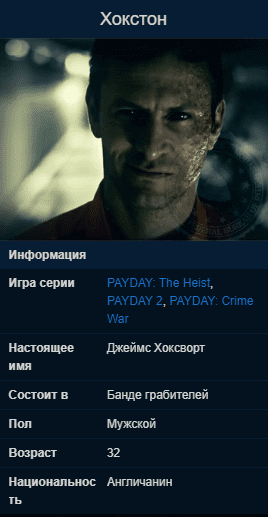

Хокстон
Хокстон получил свою кличку после того, как был пойман на деле в Лондоне, в районе Ист-Энд, работая со своими старыми напарниками. После отсидки он стал работать на мафию, а в 20 лет вступил в банду PAYDAY. После серии успешных ограблений 2011 году, Хокстона схватили федералы и отправили в тюрьму. Банда PAYDAY помогла ему бежать в 2014 году. Хокстон убежден в том, что его подставили.
Описание

Родом из Шеффилда, Южный Йоркшир, Великобритания. У него есть два брата, о которых ничего не известно.
Он и его братья устраивали "разборки" с хулиганами, футбольными болельщиками и бандитами. Никогда долго не задерживался на предыдущих работах, а также обманул множество людей. У него появлялись долги. Запугивая людей, он заставлял их работать на себя, таким образом он вскоре погасил долги. Своё первое ограбление (алкогольного магазина) он совершил в возрасте 19-ти лет.
Во время совершения грабежей на территории Великобритании, он встретил Кловер, для которой стал напарником, а по совместительству - учителем по криминальному делу. После долгого периода совместных ограблений Кловер решила отделиться от Хокстона и скрылась вместе с грузовиком, полным штурмовых винтовок L85. Хокстон подумывал о том, чтобы убить её, но, в конце концов, гордый тем, что сумел хорошо её обучить, решил оставить её в живых. Затем Хокстон отправляется в США, где позже вступает в команду PAYDAY, а Кловер остаётся в Великобритании.После чего из "Фактов мира PAYDAY" узнаётся,что после вступления в банду PAYDAY они забыли о прошлом и стали верными напарниками.
В результате подставы Гектором к событиям PAYDAY 2 Хокстон угодил в тюрьму, но спустя 2 года был освобожден командой.
В тюрьме у Хокстона появились подозрения, что его подставили. Изначально он винил в этом Мэтта, в камеру к которому он попал, за что стал регулярно его избивать "ломая тому каждую неделю новую кость". После своего освобождения Хокстон сказал, что больше не держит на Мэтта зла, поскольку узнал о его непричастности к своему аресту. Более того - Хокстон даже предлагал освободить ещё и Мэтта.
С целью подтвердить свои подозрения, Хокстон сразу после своего спасения направляет команду в офис ФБР, где ищет информацию о "сдавшей его крысе". Благодаря полученной из серверов ФБР информации, команда получает выход на предателя - Гектора, которого затем и убивают в ходе ограбления Месть Хокстона.
Заимел на лице большой ожог, чьё происхождение неизвестно. Возможно, результат пыток. Его маска из PAYDAY: The Heist стала маской Хьюстона, а в тюрьме он сделал другую, похожую на свою старую маску.
Помочь ему бежать из тюрьмы можно в ограблении Спасение Хокстона, после чего он становится играбельным персонажем.
После роспуска банды PAYDAY Хокстон большую часть своего времени проводит на пляжах и вечеринках. Он также много раз в год посещал Лас-Вегас, купил Golden Grin Casino. В последнее время он играет в покер, только чтобы бесить противников, поскольку ему плевать, выигрывает он или проигрывает – на данный момент (секретная, хорошая концовка).
Личное дело в файлах ФБР
Недавно Хокстон был заключён в тюрьму Хейзелтона, но был освобожден бандой PAYDAY, когда он был доставлен на слушание по рассмотрению возможности условно-досрочного освобождения. Мы уверены, что будет очень трудно снова посадить его.
Снаряжение
Вместе с персонажем в игру были добавлены:
- Набор перков Аферист.
- Огнестрельное оружие - дробовик Predator 12.
- Оружие ближнего боя - Заточка Новы.